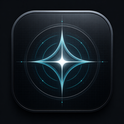
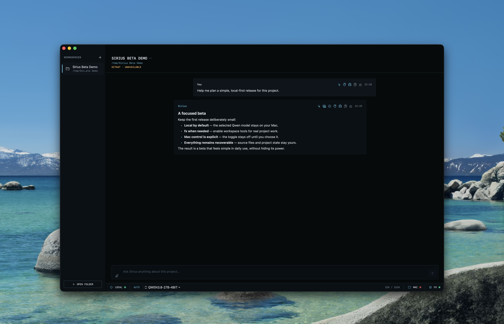
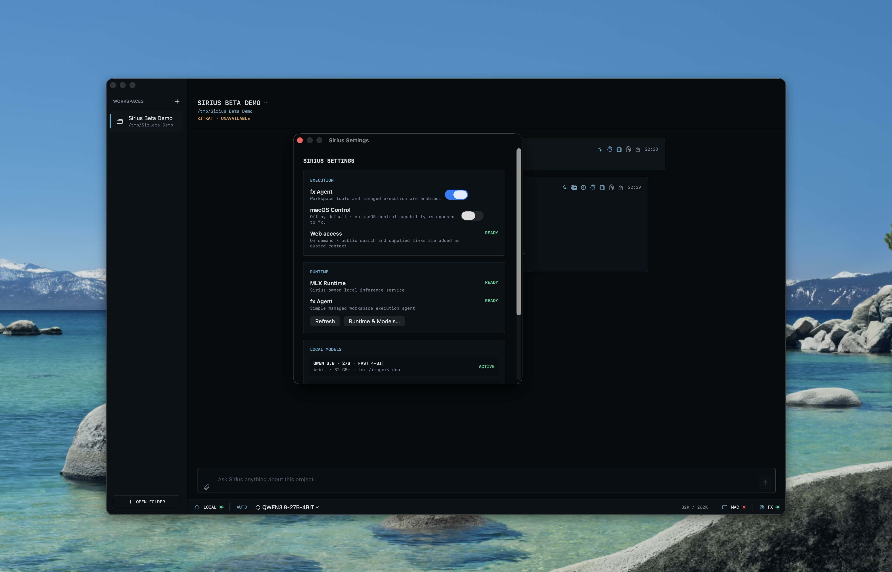

Direct Qwen
Fast, streaming conversation through Sirius-owned MLX infrastructure. No agent ceremony for a simple question.

SIRIUSPIXEL RECORDS LOCAL AI Get the betaPUBLIC BETA // APPLE SILICON
Sirius gives every project a persistent local AI workspace—with fast direct chat, focused fx execution, and optional Mac control when you choose it.

01 // THE OPERATING MODEL
Chat directly with your local model for everyday work. Turn on fx only when the task needs tools, files, or a longer execution loop.
Fast, streaming conversation through Sirius-owned MLX infrastructure. No agent ceremony for a simple question.
A small, focused execution layer for real project work. Persistent enough to be useful, quiet enough to stay out of the way.
Each workspace remembers its own context, files, and conversation. Close Sirius, return later, and keep moving.

02 // EXPLICIT CONTROL
fx and macOS Control are separate switches. Enable the agent without handing it your Desktop, then grant Mac control only for the turns that truly need it.
03 // LOCAL BY DESIGN
Sirius is built for people who want a capable AI collaborator without turning every thought into a cloud workflow.
Local inference, deliberate tools, recoverable state. The system stays understandable even as it becomes more powerful.
0.5.0 BETA 1 // AVAILABLE NOW
First launch: right-click Sirius and choose Open. The beta is not notarized yet. Sirius will guide you through local runtime and model setup.
Release notes and SHA-256 →